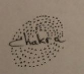
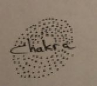

RESEARCH & DISCOVERY
COMPETITIVE ANALYSIS
In order to better understand the market, I conducted a SWOT analysis of three major competitors.

Based on my SWOT analysis, I determined that a new competitor would need, at minimum, the following features:
Based on my SWOT analysis, I determined that a new competitor would need, at minimum, the following features:
- A robust free plan
- A modern and intuitive interface
- The ability to upload and share files, as well as collaborate
- The option to create notes and documents within the app.
I also noticed that all of the companies I researched evoked a very
business-like or corporate mood via their websites. Upon making this observation, I did
additional
research which consisted of viewing other cloud server’s websites. I found most of them to be
similar.
Taking this into consideration, I decided that an additional way for a new cloud service to
enter a
highly saturated market would be to focus on a niche audience that would appreciate an
interface
that nurtures the idea of using a cloud service for creative and personal endeavors, rather
than
for business matters.


 
